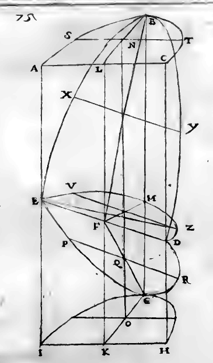

Proposition VIII: Ratio of Oblique Cylindrical Hooves¶


Proposition VIII · Theorem VIII (pp. 70–71, Tab. 9, Fig. 75)
If through the same straight line lying in the plane of the parallelogram which is the base of a semicylinder three planes cutting the same semicylinder be extended, so that the sections become semi-ellipses or semicircles: the same proportion that the lines joining the vertices of the said semi-ellipses or semicircles enclosing the cylindrical portions have, the portions themselves will obtain between one another: and the said joining lines will lie on the same side of the cylinder.
Let there be a semicylinder whose bases are semicircles ABC, IGH (margin: Tab. 9, Fig. 75); and through straight line ED lying in parallelogram AH let three planes be drawn, whose sections are semi-ellipses or circles EBD, EMD, EGD; then (since the centers of the bases are K, L) let KL be joined, which will be the axis of the cylinder; next from point L having drawn perpendicular LB, namely the conjugate semidiameter of AC, let a plane pass through this and axis LK cutting the semicylinder, so that it makes section LBGK a parallelogram, and cuts the planes of the semi-ellipses or semicircles so that the common sections are FB, FM, FG; points B, M, G will be (as I shall show) the vertices of the said conic semi-sections. I say that the portion of the cylinder enclosed by the two semi-sections EBD, EGD is to the portion contained by the two EBD, EMD as line BG is to BM. Let us conceive a plane drawn parallel to axial parallelogram AH, so that it cuts the cylinder, and the section of this cutting plane and parallelogram LG, namely line ON, will be parallel to axis LK, and therefore also to the sides of the cylinder which are together in the cutting plane, whence it comes about that all lines drawn within these three parallels, namely ST, XY, VZ, PQR, are similarly divided by line ON (for they are the common sections of the said cutting plane and of the said semi-sections) and since the said cutting plane is parallel to parallelogram AH, lines XY, VZ, PR will be parallel to the same ED, while line ST is parallel to AC; and therefore just as TS is bisected at N by BL itself, or rather by NO, so too line PR will be bisected at Q by the same NO, that is by FG itself; say the same of the remaining lines XY, PR, wherefore it is evident that lines BF, MF, GF are conjugate semidiameters to the diameter ED
f. 0088 · p. 71common to semi-ellipses or semicircles EBD, EMD, EGD; and therefore it is clear that points B, M, G are the vertices of those same semi-sections. Therefore (to show at length what was proposed) since portion EGDB of the cylinder is to portion EMDB as the prism circumscribed about the former portion, whose base is equal to triangle BFG, is to another prism circumscribed about the other portion having as its base a triangle equal to BFM; and both prisms have a common altitude, namely twice the perpendicular which would be drawn from point E to the plane of parallelogram LG; the inscribed portions will be to each other as triangle BFG is to triangle BFM, indeed as straight line GB is to BM, Q.E.D.